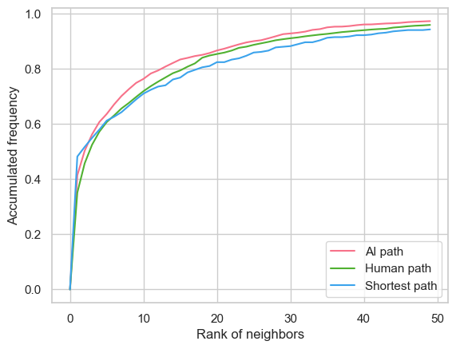
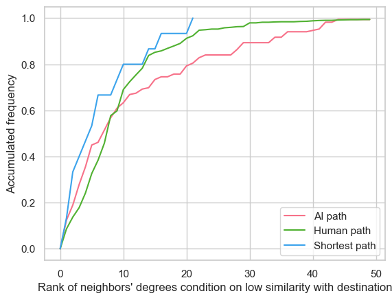

Comparison of lengths (back is also counted). We found that GPT performs better than humans on most of the topics but worse than humans on some others, we went deeper on the differences and reasons below.
Closeness score distribution
To measure how closer each step get to the destination in semantic level, we define closeness score for (current node, next node, destination) as
\( \cos(\text{embedding}(\text{nextnode}), \text{embedding}(\text{destination})) - \cos(\text{embedding}(\text{currentnode}), \text{embedding}(\text{destination})) \)
where cos is cosine similarity and embedding is the sentence embedding of the article name corresponding to the node calculated using Sentence Transformer.
The higher peaks of AI and human paths around 0.0-0.25 suggest that both tend to take similar, moderately efficient routes. However, the blue curve's notable peak around 0.75 indicates that the shortest possible paths are often quite different from the routes that both humans and AI naturally choose - a fascinating insight into navigation behavior!
The accumulated frequency of rank of chosen neighbor
We found that the GPT tends to choose the node that is semantically closer to the destina- tion compared to human. However, the shortest pats shows lower preference of neighbors with rank out of 3, which indicates that the semantically closer may not mean the graphical better performance.
The accumulated frequency of rank of chosen neighbor's degree, conditioning on low simi- larity with destination
If all the similarities between each neighbors with the destination is not so large, choose a nodes with larger degree may be a good strategy. So we plot the graph of the accumulated frequency of rank of chosen neighbor's degree, conditioning on low similarity with destina- tion. And we find that the Shortest path and human tends to choose the nodes with larger degree than GPT, this may be a point of improvement for prompt.
First Step Choices in Relation to Step Lengths
We divided the paths into ”good” and ”bad” groups according to their lengths, and compared
the closeness score and out-degrees for the first steps for different groups:
ai good, human good,
optimal, ai bad, human bad.
- Ai good: paths with length less than 1.5 times of the optimal path length
- Human good: paths with length less than 1.5 times of the optimal path length
- Optimal: the shortest path
- Ai bad: paths with length more than 1.5 times of the optimal path length
- Human bad: paths with length more than 1.5 times of the optimal path length
The results show that compared to longer paths, shorter paths tend to select:
- Articles with higher out-degrees
- Articles with higher closeness scores
- Out Degrees comparison:
- Closeness Scores comparison